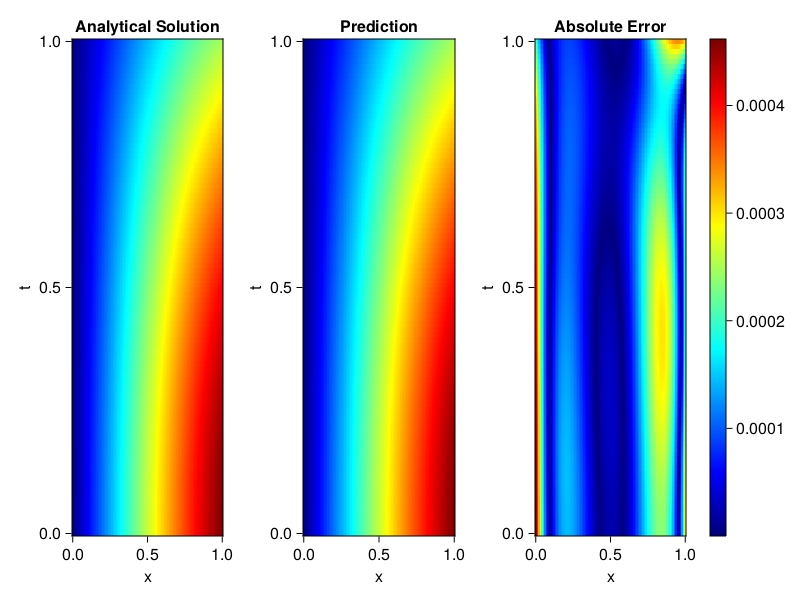
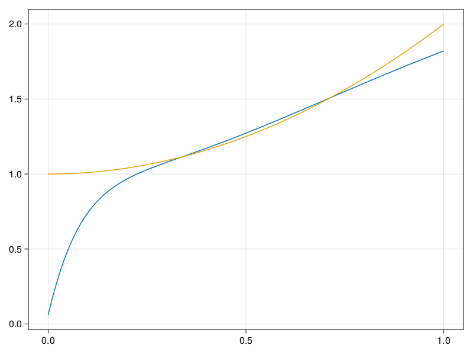

Inverse problem for the wave equation with unknown velocity field
We are going to sovle the wave equation.
using Sophon, ModelingToolkit, IntervalSets
using Optimization, OptimizationOptimJL
@parameters x, t
@variables u(..), c(..)
Dₜ = Differential(t)
Dₜ² = Differential(t)^2
Dₓ² = Differential(x)^2
s(x,t) = abs2(x) * sin(x) * cos(t)
eq = Dₜ²(u(x,t)) ~ c(x) * Dₓ²(u(x,t)) + s(x,t)
bcs = [u(x, 0) ~ sin(x),
Dₜ(u(x, 0)) ~ 0,
u(0, t) ~ 0,
u(1, t) ~ sin(1) * cos(t)]
domains = [t ∈ Interval(0.0, 1.0),
x ∈ Interval(0.0, 1.0)]
@named wave = PDESystem(eq, bcs, domains, [t,x], [u(x,t),c(x)])\[ \begin{align} \frac{\mathrm{d}}{\mathrm{d}t} \frac{\mathrm{d}}{\mathrm{d}t} u\left( x, t \right) =& c\left( x \right) \frac{\mathrm{d}}{\mathrm{d}x} \frac{\mathrm{d}}{\mathrm{d}x} u\left( x, t \right) + \cos\left( t \right) \left|x\right|^{2} \sin\left( x \right) \end{align} \]
Here the velocity field $c(x)$ is unknown, we will approximate it with a neural network.
pinn = PINN(u = FullyConnected((2,16,16,16,1), sin),
c = FullyConnected((1,16,16,1), tanh))
sampler = QuasiRandomSampler(500,100)
strategy = NonAdaptiveTraining(1, (10,10,1,1))NonAdaptiveTraining{Int64, NTuple{4, Int64}}(1, (10, 10, 1, 1))Next we generate some data of $u(x,t)$. Here we place two sensors at $x=0.1$ and $x=0.5$.
ū(x,t) = sin(x) * cos(t)
x_data = hcat(fill(0.1, 1, 50), fill(0.5, 1, 50))
t_data = repeat(range(0.0, 1.0, length = 50),2)'
input_data = [x_data; t_data]
u_data = ū.(x_data, t_data)1×100 Matrix{Float64}:
0.0998334 0.0998126 0.0997503 0.0996464 … 0.275281 0.267213 0.259035Finally we construct the inverse problem and solve it.
additional_loss(phi, θ) = sum(abs2, phi.u(input_data, θ.u) .- u_data)
prob = Sophon.discretize(wave, pinn, sampler, strategy; additional_loss=additional_loss)
@time res = Optimization.solve(prob, BFGS(), maxiters=1000)u: ComponentVector{Float64}(u = (layer_1 = (weight = [-0.34577716551522036 -1.173338085576223; -0.676254146586262 -0.8129587944645303; … ; 0.7637779467892662 1.1620462375704501; 0.16108146708799487 -0.2877947370244177], bias = [0.2650910964829029; 0.23949364851155477; … ; 0.4713242629652277; 0.18795751396851512;;]), layer_2 = (weight = [0.20186055877772904 0.4615362221365026 … 0.4940993232668802 0.5789222946221743; 0.24622953121176946 -0.2543707564147131 … -0.2978509235916799 -0.5186648544814596; … ; -0.20787055573933552 0.10164032122763487 … -0.35510222474499537 0.4862847246667668; -0.12585467032252087 -0.48810168239941476 … 0.047678662619849196 0.41482876677457275], bias = [-0.05237019622046365; -0.4927100442777713; … ; 0.08463000874849982; 0.19339407682730514;;]), layer_3 = (weight = [-0.23082200309523315 -0.4081807880280804 … -0.24591016025298396 0.6151468346579654; 0.3895419293682044 -0.17396622363783792 … -0.20642214450526727 0.2797534180318998; … ; -0.04155966307679033 -0.10861636780302952 … 0.3144712478892301 -0.055609876846197996; -0.24687384114296732 -0.6412046512819457 … 0.2857568212028304 0.5549688894121106], bias = [0.19057080068929616; -0.013459528278297599; … ; 0.06535670818423789; -0.1531991805675515;;]), layer_4 = (weight = [0.15032690241122237 0.002155418540187864 … 0.17792896757483556 0.617576059438058], bias = [-0.1875382837354788;;])), c = (layer_1 = (weight = [2.3318856561259977; -0.8612436759920854; … ; 1.7257204454322448; -2.4217027676860785;;], bias = [0.21658426506273162; 0.25286866970412186; … ; 0.07117699729930359; -0.1411398423751826;;]), layer_2 = (weight = [-0.48269364814460686 -0.6309282262514803 … 0.15317388680436414 0.5444722927351308; -0.633682482391554 0.4600601154340307 … -0.16074505800669928 0.617035564196819; … ; -0.6186524721324935 -0.31479306320246675 … 0.4918818465716015 0.7695264254385306; 0.6968762163661933 0.21518361601792305 … 0.2034778714054116 -0.5723958303806629], bias = [-0.02366319171679053; 0.05234676101815987; … ; -0.0468468677430326; -0.08095826269972278;;]), layer_3 = (weight = [0.1118485707170305 -0.0026285201472951384 … -0.550578959598602 0.4339119374210988], bias = [-0.38023793632416786;;])))Let's visualize the predictted solution and inferred velocity
using CairoMakie
ts = range(0, 1; length=100)
xs = range(0, 1; length=100)
u_pred = [pinn.phi.u([x, t], res.u.u)[1] for x in xs, t in ts]
c_pred = [pinn.phi.c([x], res.u.c)[1] for x in xs]
u_true = [ū(x, t) for x in xs, t in ts]
c_true = 1 .+ abs2.(xs) |> vec
axis = (xlabel="x", ylabel="t", title="Analytical Solution")
fig, ax1, hm1 = heatmap(xs, ts, u_true, axis=axis; colormap=:jet)
ax2, hm2= heatmap(fig[1, end+1], xs, ts, u_pred, axis= merge(axis, (;title = "Prediction")); colormap=:jet)
ax3, hm3 = heatmap(fig[1, end+1], xs, ts, abs.(u_true .- u_pred), axis= merge(axis, (;title = "Absolute Error")); colormap=:jet)
Colorbar(fig[:, end+1], hm3)
fig
fig, ax = lines(xs, c_pred)
lines!(ax, xs, c_true)
fig